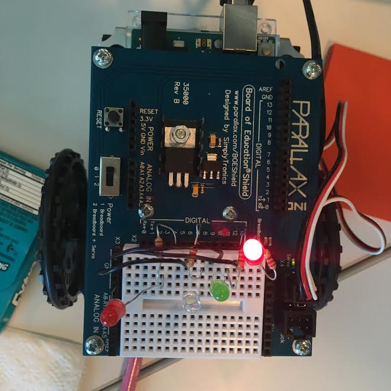

I learned a lot about circuits today. Although I had no prior knowledge of physics, I learned about getting LED lights to light up on my circuit by using jumper wires, resistors, LED lights, and a breadboard. 